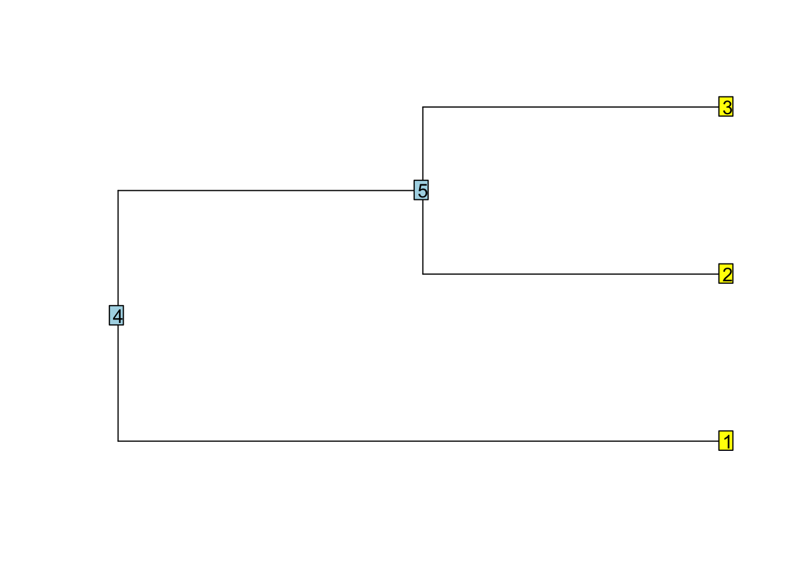
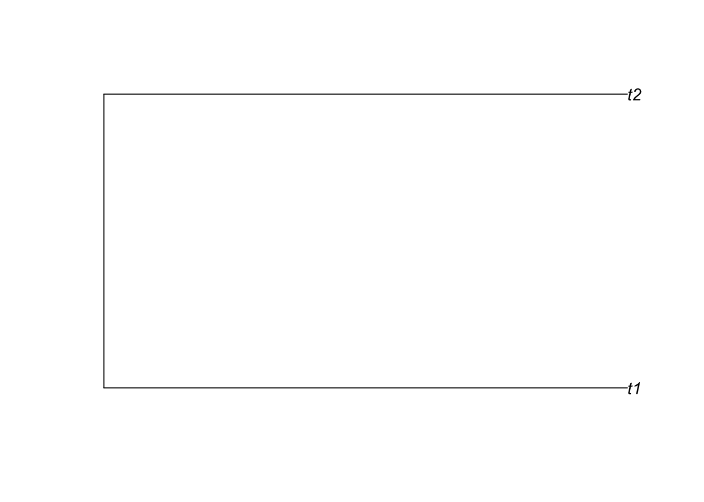
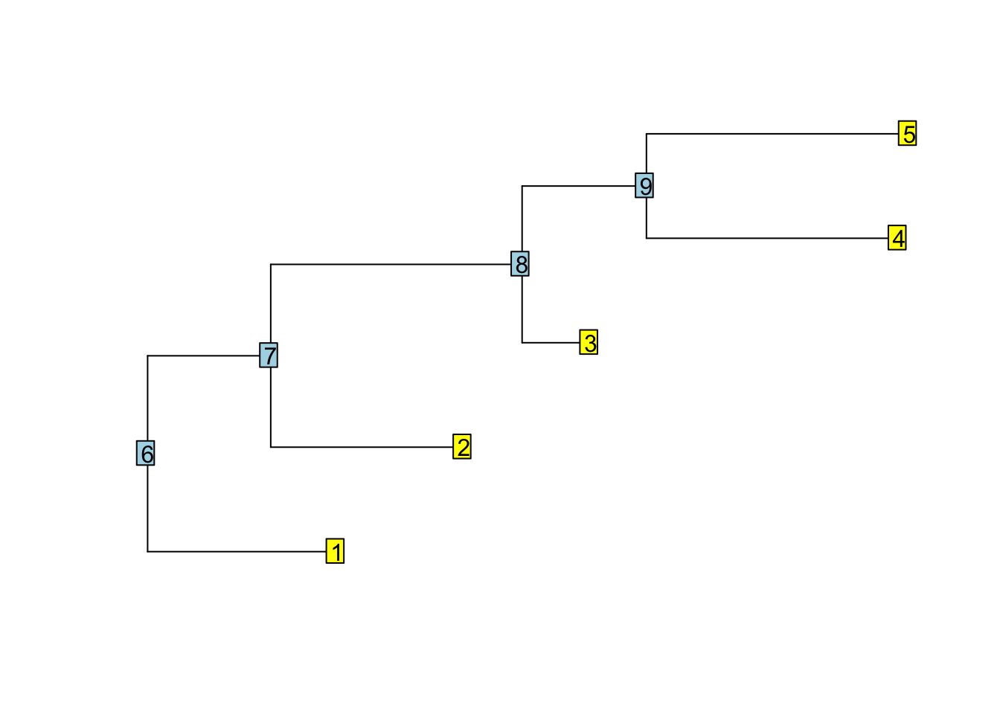
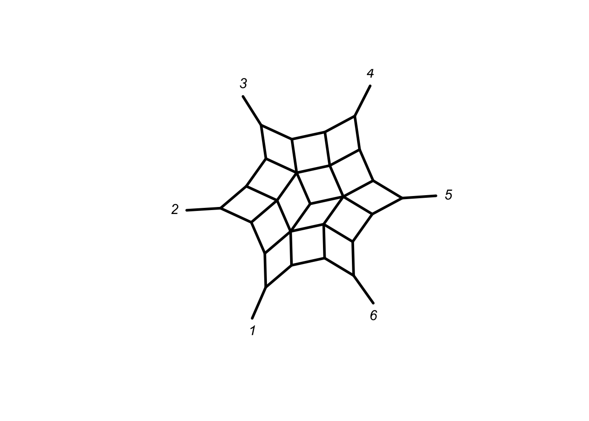

A brief history of phylogenetics in R
1993: first release of R
1996: Ihaka & Gentleman, J. Comput. Graph. Statist., 5: 299–314
2000: R 1.0.0
2001: start the development of ape
2002: first release of ape
2008: first release of phangorn
2019: 260 packages depending on ape on CRAN, 16 on BioConductor (and 100’s elsewhere: R-Forge, GitHub, . . .)
Getting help
So many functions, but how to find/remember them?
- write scripts (and maintain them!)
- help.start()
- ?… (or help(“…”))
- apropos(“…”)
- use TAB-completion (or a “cool” editor)
Operators are also functions:
`+` # or get("+")
## function (e1, e2) .Primitive("+")`+`(1, 2)
## [1] 3Find generic functions for a class
Common generic functions are print, plot, c, summary, anova, [, …
library(ape)
methods(class="phylo")
## [1] + addConfidences all.equal
## [4] as.evonet as.hclust as.matching
## [7] as.networx as.splits c
## [10] coalescent.intervals cophenetic di2multi
## [13] identify is.binary is.rooted
## [16] is.ultrametric makeLabel midpoint
## [19] multi2di Nedge Nnode
## [22] Ntip plot print
## [25] reorder root simSeq
## [28] skyline summary unroot
## [31] updateLabel vcv
## see '?methods' for accessing help and source codeRun all examples of the help files!
example(plot.phylo)However examples in (CRAN) R packages are not allowed to run longer than 5 seconds. So for inference this results frequently in toy examples. You need to change to higher number of bootstrap iterations, change stop criterion for optimisation et cetera.
Many packages on CRAN and all on Bioconductor come with vignettes.
vignette()
vignette(package="phangorn")
vignette("Trees", package="phangorn")And there is google and stackoverflow.
The phylo class
The phylo class is a tree structure in ape are the standard for storing phylogenetic in R. It is also used in more than 260 packages on CRAN.
This class represents phylogenetic trees and networks; (internal) nodes are of degree ≥ 2; the tips (terminal nodes) are of degree 1. The tip labels may be replicated (or can even missing). Idem for the node labels (which are optional).
Structure of phylo objects
An object of class phylo is a list containing at least the following objects:
- An integer matrix named edge with two columns and as many rows as there are edges in the tree.
- A character vector named
tip.label, can be "".
- An integer
Nnodewith the number of internal nodes. - A class attribute
phylo.
library(ape)
tree <- read.tree(text = "(,(,));")
plot(tree)
nodelabels()
tiplabels()
str(tree)
## List of 3
## $ edge : int [1:4, 1:2] 4 4 5 5 1 5 2 3
## $ Nnode : int 2
## $ tip.label: chr [1:3] "" "" ""
## - attr(*, "class")= chr "phylo"
## - attr(*, "order")= chr "cladewise"The storage mode is important. Saving a vector of integers saves memory in comparison to vector of doubles.
Also objects of class phylo often in C-Code so you need to take care of this.
Also comparing doubles is dangerous:
x <- 3
y <- sqrt(3)^2
x==y
## [1] FALSEIn the edge matrix each edge (branch) is coded by the nodes it connects.
tree$edge
## [,1] [,2]
## [1,] 4 1
## [2,] 4 5
## [3,] 5 2
## [4,] 5 3Tips (terminal nodes, leaves, labels, …) are numbered from 1 to n, where n is the number of tips. The root is numbered n+1. The ancestral node (closer to the root) is always on the lefthand column.
Some important properties and observations:
* the first column only contains values greater than n.
* all nodes, but the root, appear exactly once in the second column.
* in a strictly bifurcating tree, all nodes greater then n appear twice and the root node n+1, in case of ‘twice’ for rooted and trice for unrooted trees.
So we can start and construct a minimal tree ourselves:
library(ape)
simple_tree <- structure(list(edge = matrix(c(3L, 3L, 1L, 2L), 2, 2),
tip.label = c("t1", "t2"), Nnode = 1L), class = "phylo")
plot(simple_tree)
A phylo object always contains an edge, tip.label and Nnode. Often a phylo object contains some of the following elements:
- a numeric vector
edge.length. The length of the vector is number of rows of theedgematrix and the order corresponds to the rows inedge. - a character vector
node.labelsof lengthNnode. The node labels are labeled fromn+1ton+Nnode - A single numeric root.edge providing the edge length at the root.
Additionally most phylo objects have an attribute order, which can be either “cladewise”, “postorder” or “pruningwise”.
Tree traversal
Tree traversal in ape is implemented iterative in contrast to the recursive implementation in most other phylogenetic programs.
Preorder tree traversal
Preorder tree traversal is travelling through the tree from the root to the tips visiting always the all nodes the right subtree before visiting the right subtree.
tree <- rtree(5)
plot(tree, show.tip.label = FALSE)
nodelabels()
tiplabels()
reorder(tree, "cladewise")$edge
## [,1] [,2]
## [1,] 6 7
## [2,] 7 8
## [3,] 8 1
## [4,] 8 2
## [5,] 7 3
## [6,] 6 9
## [7,] 9 4
## [8,] 9 5Postorder tree traversal
Postorder tree traversal travels through the tree from the tips through the root. All the descendent nodes need to be visited before the ancestral node.
reorder(tree, "postorder")$edge
## [,1] [,2]
## [1,] 9 4
## [2,] 9 5
## [3,] 8 1
## [4,] 8 2
## [5,] 7 8
## [6,] 7 3
## [7,] 6 7
## [8,] 6 9Defining the order of the traversal of the tree this way allows to iterate just through the tree. Reorder not only changes the order of the edge matrix, but also of the edge.length if it exists.
###Excercise 1: Write a function which counts how many descendants each node has. The output should look like:
set.seed(42)
tree <- rtree(5)
plot(tree, show.tip.label = FALSE)
nodelabels()
tiplabels()
nr_desc(tree)
## [1] 1 1 1 1 1 5 4 3 2My solutions
library(phangorn)
nr_desc_cheat <- function(x){
lengths(Descendants(x, 1:max(x$edge)))
}
nr_desc <- function(x){
x <- reorder(x, "postorder")
res <- numeric(max(x$edge))
res[1:Ntip(x)] = 1L
for(i in 1:nrow(x$edge)){
tmp = x$edge[i,1]
res[tmp] = res[tmp] + res[x$edge[i,2] ]
}
res
}###Excercise 2: Write a function which computes the distance from each node to the root.
tree$edge.length[] <- 1
root_to_tip(tree)
## [1] 1 2 3 4 4 0 1 2 3My solution:
root_to_tip <- function(x){
x <- reorder(x)
res <- numeric(max(x$edge))
for(i in 1:nrow(x$edge)){
pa <- x$edge[i,1]
ch <- x$edge[i,2]
res[ch] = res[pa] + x$edge.length[i]
}
res
}The ‘multiPhylo’ class
An object of class ‘multiPhylo’ is a list of of several trees each of class ‘phylo’. If all trees share the same tip labels, as in bootstrap samples or from MCMC analyses, trees can be saved in a memory efficient way storing the labels only once in an attribute TipLabel.
trees <- rmtree(1000, 100)
trees
## 1000 phylogenetic treesattr(trees, "TipLabel")
## NULLtrees_compact <- .compressTipLabel(trees)
attr(trees_compact, "TipLabel")
## [1] "t92" "t69" "t100" "t2" "t82" "t24" "t18" "t99" "t55" "t40"
## [11] "t21" "t57" "t42" "t94" "t13" "t53" "t54" "t83" "t32" "t80"
## [21] "t60" "t29" "t73" "t43" "t58" "t72" "t79" "t98" "t38" "t1"
## [31] "t86" "t5" "t78" "t16" "t77" "t88" "t65" "t56" "t33" "t59"
## [41] "t89" "t74" "t25" "t51" "t96" "t17" "t46" "t14" "t47" "t6"
## [51] "t52" "t66" "t37" "t67" "t31" "t34" "t30" "t63" "t81" "t22"
## [61] "t75" "t84" "t64" "t20" "t15" "t45" "t23" "t12" "t49" "t26"
## [71] "t9" "t71" "t97" "t95" "t27" "t28" "t11" "t85" "t76" "t41"
## [81] "t10" "t93" "t48" "t68" "t61" "t19" "t3" "t62" "t87" "t50"
## [91] "t36" "t35" "t91" "t90" "t70" "t44" "t4" "t7" "t8" "t39"
object.size(trees) / object.size(trees_compact)
## 2.5 bytesSwitching between the two representations can be done via ‘.compressTipLabel’ and ‘.uncompressTipLabel’.
Importing and exporting trees and networks
Package ape and phangorn contains functions to import trees and splits
networks:
read.treeNewick filesread.nexusNEXUS files (only trees)read.evonetnetworks in extended Newick formatread.networxphylogenetic splits networks in nexus format (Splitstree)
and
write.treeNewick (one or several trees)write.nexusNEXUS (one or several trees with or without translate block)write.evonetextended Newick (.nhx)read.networxphylogenetic splits networks in nexus format (e.g. Splitstree)
Any R object(s) can be saved on disk: this is much better if these data are used only in R. (*Faster to read/write, smaller files, and no loss of numerical accuracy.) Several objects:
save(X, a, y, file = "X.rda")several objects with their namesload("X.rda")\(\rightarrow\) restores object names (i.e., possibly deletes previous X, a, y in the workspace) A single object:saveRDS(X, file = "X.rds")Y <- readRDS("X.rds")\(\rightarrow\) the name of the object can be changed
Functions for phylo objects
Before you write a function look what’s already out there.
Some convenience functions
There are several convenience functions to achieve common tasks:
| Operation | High level | Low level |
|---|---|---|
| How many tips? | Ntip(tr) | length(tr$tip.label) |
| How many node? | Nnode(tr) | tr$Nnode |
| How many edges? | Nedge(tr) | nrow(tr$edge) |
| What are the ancestor of x | Ancestors(tr, x, “parent”) | tr$edge[tr$edge[,2]==x , 1] |
| What are the descendants of x | Descendants(tr, x, “children”) | tr$edge[tr$edge[,1]==x , 2] |
Ntip, Nnode, Nedge are generic and work on phylo and multiPhylo objects. Ancestors and Descendants are vectorized , i.e. argument node can be a vector.
Some useful functions to modify trees
root(phy, outgroup, ...),
unroot(phy),
midpoint(tree),
drop.tip(phy, tip, ...),
keep.tip(phy, tip),
extract.clade(phy, node, ...),
bind.tree(x, y, ...),
c(...),
multi2di(phy, random = TRUE),
di2multi(phy, tol = 1e-8),
rotate(phy, node),
rotateConstr(phy, X),
reorder(phy, order = "cladewise")
Some of the above functions have the option interactive (FALSE by default) and many are generic.
And some functions to explore the Baumraum (tree space)
nni, rNNI, rSPR, allTrees.
networx class
The networx class is build up on phylo to allow to store (undirected) phylogenetic networx. I may will go into more detail later the week.
library(magrittr)
phangorn:::allCircularSplits(6) %>% as.networx %>% plot(type="2D")
Special thanks to Emmanuel Paradis for sharing some lecture notes!
Paradis E. (2012) Definition of Formats for Coding Phylogenetic Trees in R url
Paradis E. (2012) Analysis of Phylogenetics and Evolution with R, 2nd ed., Springer, New York
Paradis E. & Schliep K. (2019) ape 5.0: an environment for modern phylogenetics and evolutionary analyses in R, Bioinformatics 35 (3), 526-528
Schliep K.P. 2011. phangorn: phylogenetic analysis in R. Bioinformatics, 27(4) 592-593